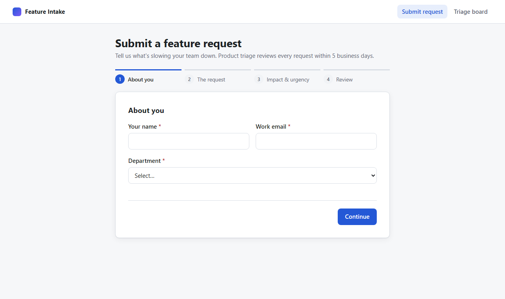
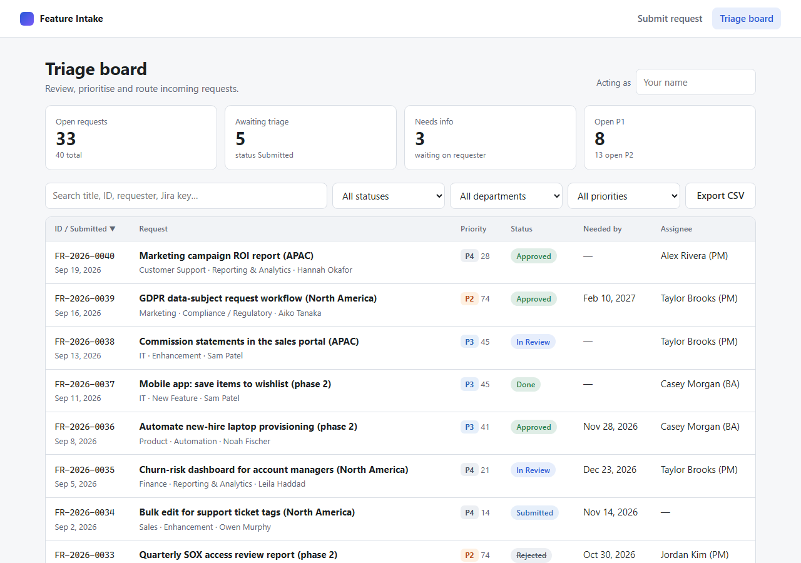
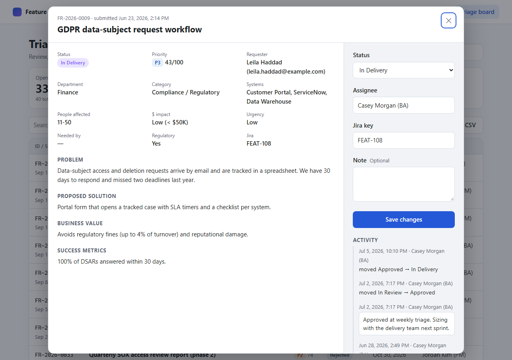
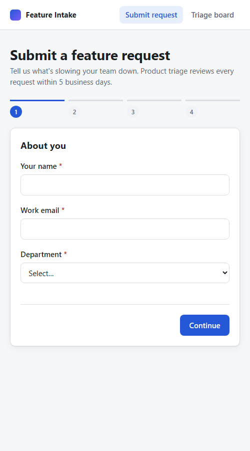

The MVP screens are real screenshots of the running app. Phase 2 mockups show the notification, SSO and integration experiences described in the PRD (FR-14 to FR-18) and the Jira stories in epic E5. Content uses the seed test data.
Captured from npm start after npm run seed. Regenerate with headless Edge or Chrome (see README).




After OIDC sign-in, name, email and department come from the identity token and are locked. The requester goes straight to step 2 unless their department is missing.
Not right? Update your profile in Workday. Changes appear here the next time you sign in.
Requesters see only their own requests. When a request is in Needs Info, the triage question is shown inline, and replying moves the request back to In Review (story "My requests page for requesters").
| Reference | Request | Status | Last update |
|---|---|---|---|
| FR-2026-0041 | Auto-sync closed-won deals to invoicing Submitted Sep 23 | Needs Info | Today · Jordan Kim |
| FR-2026-0027 | Quarterly SOX access review report Submitted Aug 12 | Approved | Aug 19 · FEAT-126 |
| FR-2026-0010 | Marketing campaign ROI report Submitted Jun 26 | In Delivery | Jul 30 · FEAT-109 |
Roughly how many invoices per month are re-keyed, and which SAP company codes are involved?
Sent by the outbox worker (ADR-006). Plain, text-first layout that works in Outlook. Every email has the reference, the current status and one clear link.
Product triage reviews every request within 5 business days.
Jordan Kim asked:
Roughly how many invoices per month are re-keyed, and which SAP company codes are involved?
If we don't hear back within 10 business days we'll close the request. You can reopen it any time.
Answer the questionIt's now in the delivery backlog as FEAT-141. The delivery team will size it in the next sprint.
Posted to the triage channel when a new submission scores P1, so urgent items are seen the same day.
P1 · 89 New request: GDPR data-subject request workflow
Grace Liu · Legal & Compliance · Critical · needed by Oct 30 · regulatory
"Data-subject access and deletion requests arrive by email and are tracked in a spreadsheet. We have 30 days to respond and missed two deadlines last year."
Open in triage board Assign to meCreated when a request moves to Approved. The request content is mapped into the description, and labels link it back to the intake record.
jira.create→Jira REST POST /rest/api/3/issue→jiraKey saved on FR→requester emailedFinance re-keys every closed deal from Salesforce into SAP by hand, which takes days and introduces errors.
Saves about 120 hours per month and speeds up cash collection.
Feature Intake FR-2026-0041 · requested by Priya Raman (Finance) · score 55 / P2